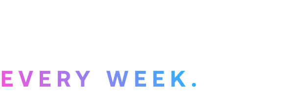

|  | Avrupa Süper Ligi, UEFA Şampiyonlar Ligi'ne rakip olmayı amaçlayan, en iyi Avrupa kulüplerinin yarışacağı, önerilen yıllık bir kulüp futbol yarışmasıdır. Bir "Avrupa Süper Ligi" kurulması üzerine uzun spekülasyonların ardından, önerilen yarışma 18 Nisan 2021'de 12 kulüp tarafından kuruldu ve 3 kulüp daha katılması bekleniyor. Bu on beş "kurucu kulüp", yönetecekleri yarışmanın kalıcı katılımcılarıdır. Florentino Pérez ilk turnuvanın ilk başkanıdır. | |
Süper Lig'in duyurusu taraftarlardan, oyunculardan, diğer kulüplerden, FIFA'dan, UEFA'dan ve ulusal hükümetlerden geniş bir muhalefet çekti. ESL'ye yönelik eleştirilerin çoğu elitizm ve rekabetçilikten yoksunluk üzerine odaklandı. Lig oluşumunun duyurulmasına karşı verilen tepki, altı İngiliz kulübünün de çekilme niyetlerini açıklamasına yol açtı. Süper Lig, İngiliz kulüplerinin ayrılmasının ardından "projeyi yeniden şekillendirmek için en uygun adımları yeniden gözden geçireceklerini" açıkladı. 21 Nisan 2021'de, resmi olarak açıklandıktan üç gün sonra, Süper Lig operasyonlarını askıya aldığını açıkladı. |
||